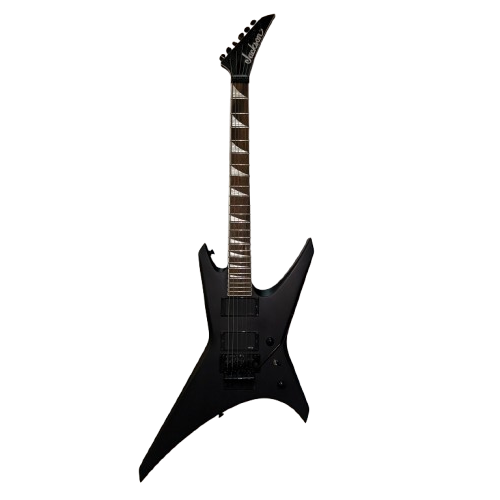
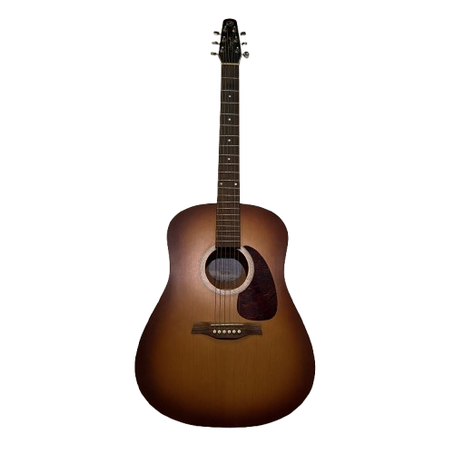
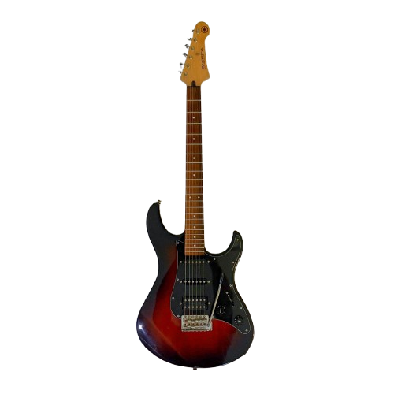

The Music Room
A curated survey of historical acoustic luthiery, string designs, and legacy instrumentation. Beyond their technical engineering, these objects represent a living generational bond—built from a family's shared love of music, where father and son grew up playing together on these very instruments. This archive preserves both the physical craftsmanship of these legacy stringed art forms and the timeless resonance of the songs passed down between them.

Jackson Warrior
- Type: Electric

Seagull Entourage Rustic
- Type: Acoustic

Yamaha Pacifica
- Type: Electric

Yamaha Pacifica
- Type: Acoustic Spec
- Era: Legacy Survey

Instrument Entry 5
- Type: Acoustic Spec
- Era: Legacy Survey

Instrument Entry 6
- Type: Acoustic Spec
- Era: Legacy Survey

Instrument Entry 7
- Type: Acoustic Spec
- Era: Legacy Survey

Instrument Entry 8
- Type: Acoustic Spec
- Era: Legacy Survey